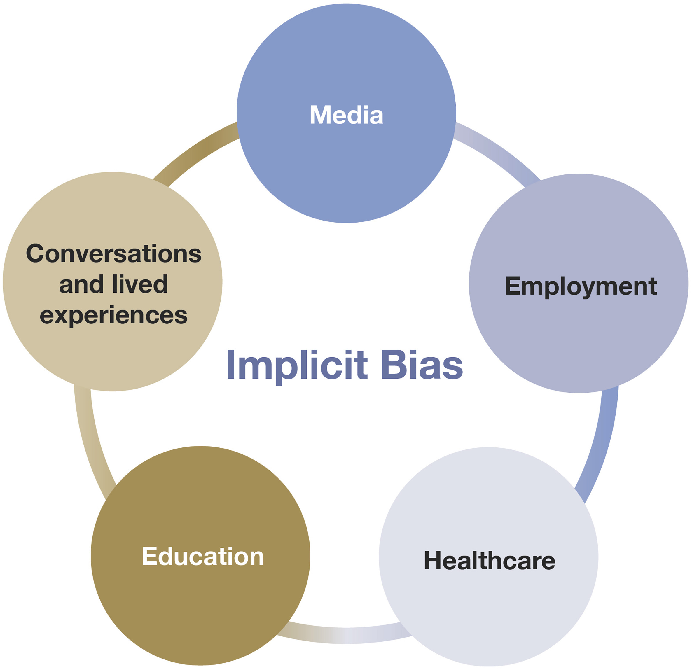

Implicit Bias Resource Guide
Three key terms for understanding how bias shapes people and technology.
Key terms
Each idea below connects to how unfair treatment can show up in education, employment, healthcare, and technology.
Implicit Bias
An unconscious belief about a social group that influences how one perceives and behaves toward others. People may not be aware they hold these beliefs or how they affect their actions, which can lead to unfair treatment or discrimination. Recognizing them is an important step toward reducing their influence.
Implicit Bias Test
A psychological assessment that measures implicit biases toward different social groups. It reveals automatic associations between concepts, such as social groups and positive or negative traits, by measuring how quickly someone categorizes words or images.
Intersectionality
The idea that experiences are shaped by several overlapping factors, such as race, gender, class, and sexuality. These interact to create unique experiences of privilege, discrimination, or inequality, which helps explain why people in the same social group can face different challenges.
Learn more
Explore these resources to go deeper on each term.
